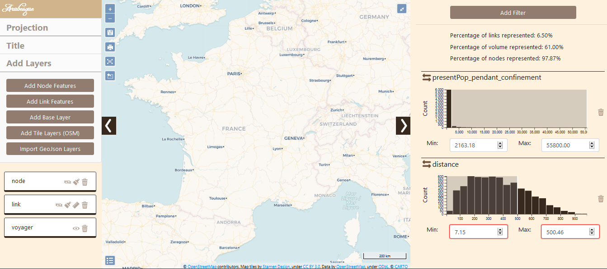
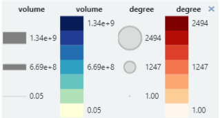

Interface
The general structure of the interface of Arabesque is composed of three panel.
- The **central*panel** is for displaying the map - centered in France here.
The two side panels are for playing with information.
- The left panel is for dealing with geometries and geographical layers. Here are displayed CARTO Based map : Voyager and
- The right panel is for playing with the flow data set.

The central panel
The central part of Arabesque corresponds to the map view. It results from the choice of the layers to be displayed (from the left panel) and the filtering of the values of the links and nodes (from the right panel).
This central panel also presents different buttons allowing the implementation of primary actions.
Primary actions with butons
The white page of Arabesque is decorated with blue action buttons.
 Details of the different buttons
Details of the different buttons
 Successively zoom in/out - the same way as with the mouse wheel.
Successively zoom in/out - the same way as with the mouse wheel.
 Save the project in .ZIP for later use.
Save the project in .ZIP for later use.
 Export the map in .PNG including legends and and contributors’ sources for external backgrounds such as OSM or NaturalEarth data.
Export the map in .PNG including legends and and contributors’ sources for external backgrounds such as OSM or NaturalEarth data.
 Refocus and display the entire view without zooming in/out or panning.
Refocus and display the entire view without zooming in/out or panning.
Export the filtered flow data - the ones visible on the map - as a list file in .JSON format.
 Show/hide the legend.
Show/hide the legend.
 Switch to full screen display - with black background.
Switch to full screen display - with black background.
 Open/close the panels located on each side of the map.
Open/close the panels located on each side of the map.
Primary legend
A legend is automatically generated for each map for nodes and links plot.

The symbolization elements (size, color and opacity) of the nodes and links are included. Here (for the default map), it is the volume of flows and the degree of places that are represented.
The geographic panel
The left panel is to design the map :
- dealing with the background as the geographical/geometrical layers
- customize the design/style of the nodes and links features
map.
The management of geographic information is composed of two sub-sections:
 Return to the home page to start a new view.
Return to the home page to start a new view.
Actions on the background of the map are for changing projections of the current map and/or to add other layers : remote or personal one. See Design map background section.
Actions on the design/style is for (additional) geographic layers that have been adding through the previous action. See Design flowmap signs section.
The geographic layer manager
In practice, a map is composed by several layer such as the bounding boxes, the graticules, the countries of land, etc.
All these layers can be loaded in the map design background section by Add Layers.
They then appear in the layer manager sub-panel, one above the other as shown below.

The present layers are all available on the map - but not necessarily all of them are visible.
The layers on the view are positioned in an order that affects their visibility. The top layer will be visible in the foreground.
The position of the layers above and below (foreground or not) can be modified by a simple drag and drop.
The statistical panel
The right panel is for playing with the flow data set, nodes and links, and to filter the map.
Display a filtering on the links/flows
 Display a filtering on the nodes
Display a filtering on the nodes
#Data import
Arabesque also allows you to import your own data sets : (1) flowdata in the form of an origin-destination matrix (adjacency long format in .csv), to agregate them if necessary and (2) nodes dataset before building a readable flowmap.
For this tutorial, we will use for example the historical trade flows listed in the RICardo database.
For more informations about the dataset and its use with Arabesque, see:
Reference : Girard P. et Dedinger B. (2020), Pourquoi et comment géolocaliser le commerce mondial des XIXe-miXXe siècles ? : Retour d’expérience sur l’usage de wikidata comme gazetteer historique et de l’application de cartographie de flux Arabesque, Humanistica, Medialab Sciences-Po. et Centre d’histoire de Sciences-Po., en ligne.
Links/flow dataset importation
Arabesque requires the loading of at least one origin-destination links/edges/flow data set. It is a matrix in .CSV (separator: comma) and long format.
You must also declare the 3 minimum fields required for flow mapping: those corresponding to the origin locations, to the destination locations and the flow values.
If the OD matrix is temporal or available for different categories, you must also choose an aggregation method.
On the homepage of(Arabesque), load at least one set of flow data.

- Click on the browse button
Application
Statistical dataset
Loading data SAGEO_RICardo_edges_small.csv.

The data must be in long format, with at least 3 columns : origin, destination, flow
The data must be in long format, with at least 3 columns to identify the origin, destination and volume of flows.
If the flow data are multiscalar (e.g. flows that concern several social groups, several goods transported or that occur on several dates), it is necessary to aggregate them when loading them into Arabesque.
Several aggregation functions are available (sum, average, median, maximum, minimum) to simplify the flows.

Note: This aggregation does not interfere with the geo-visualization possibilities that will remain available for all existing types.
Nodes/vertex dataset importation
If you have locational data associated with your ODs, you can load the corresponding node files with “Import Location”,
otherwise you can use predefined locations with “Preset Location”.
If you select “Import Location”, you must load a .GEOJSON or .CSV file, then choose the ID of the nodes and their lat/long geographic coordinates.
Application
Loading SAGEO_RICardo_nodes.csv data

The data must be in long format, with at least 3 columns to identify the place and the latitude (Y) and longitude (X) coordinates.
If you do not have a file for the geometry, you can use the codes identifying the reference data (e.g. INSEE codes of the French communes, ISO codes of the countries), to automatically geolocate your nodes. See Preset.
Preset nodes dataset
Example of pre-selection of French municipalities.

After loading the link and node files, Arabesque automatically performs a join of the common attributes between the two files.
Checking missing nodes/links features
Links that do not have an origin and/or destination ID are automatically deleted. Nodes that don’t have an ID code that allows them to be geographically located are also not kept.
The list of deleted nodes and links is displayed in a new window.

This list is for quick reference only. You must copy and paste it (into a text file, for example) if you want to keep the list of deleted entities : here 77 nodes have been deleted because they are not related to other nodes. The corresponding nodes ID are list.
After loading the link and node files, Arabesque automatically performs a join of the common attributes between the two files and computes indicator on botk links and nodes data.
Import a flowmap project
Import a previously made flowmap by loading a project file in .zip format.

The creation of a flow map with Arabesque can be broken down into the following main steps:
- Importing flow datasets (links and/or nodes)
2. Processing flow datasets (creation of indicators, statistics)
- Statistical data computing (filtering, …)
- Geographical data computing (choosing the map background…)
- Graphic symbolization for thematic flow mapping purposes
- Flowmap decoration
- Export
The links and nodes datasets are automatically modified when importing and Arabesque computes different indicators.
Data indicators pre processing
Indicators on links: Euclidean distance between the origin and destination entities
Indicators on nodes : see below the additional indicators () automatically calculated on the nodes of the RIcardo data
See below the indicators that have been automatically computed (ie the additional variable) on the nodes of the RIcardo data.

These indicators can be downloaded in . csv format (see Export and Save sections).
Loading links and nodes data into Arabesque leads to the creation of a default map, which is placed in the center of the interface.
Visualize a default flow map
Loading data in Arabesque leads to the creation of a default map to avoid visualizing a “spaghetti effect” when entering the application ; all the defined parameters can then be modified during the exploration.
By default, the links are represented in shades of blue and the nodes in red. The map is presented in the WGS84 projection, according to the lat/lon coordinates* declared during the import.
Except in the case of loading a projected geometry as input, the map is presented in WGS84.
Hereby is the Ricardo’s dataset default map with global statistic of the percent of links versus the percent of volume of flows and nodes.
 Only the 10% most important links (in value) are represented and symbolized (see the automatic legend) according to their intensity (the flow variable entered at import).
The corresponding nodes are symbolized according to their degree (variable calculated automatically during the import).
Only the 10% most important links (in value) are represented and symbolized (see the automatic legend) according to their intensity (the flow variable entered at import).
The corresponding nodes are symbolized according to their degree (variable calculated automatically during the import).